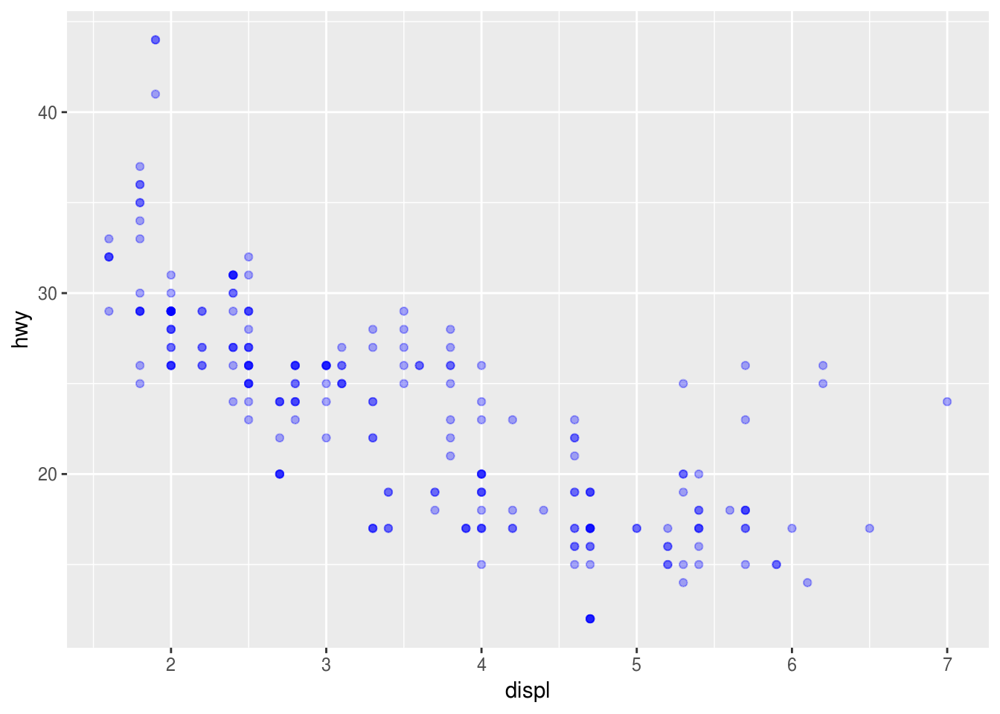
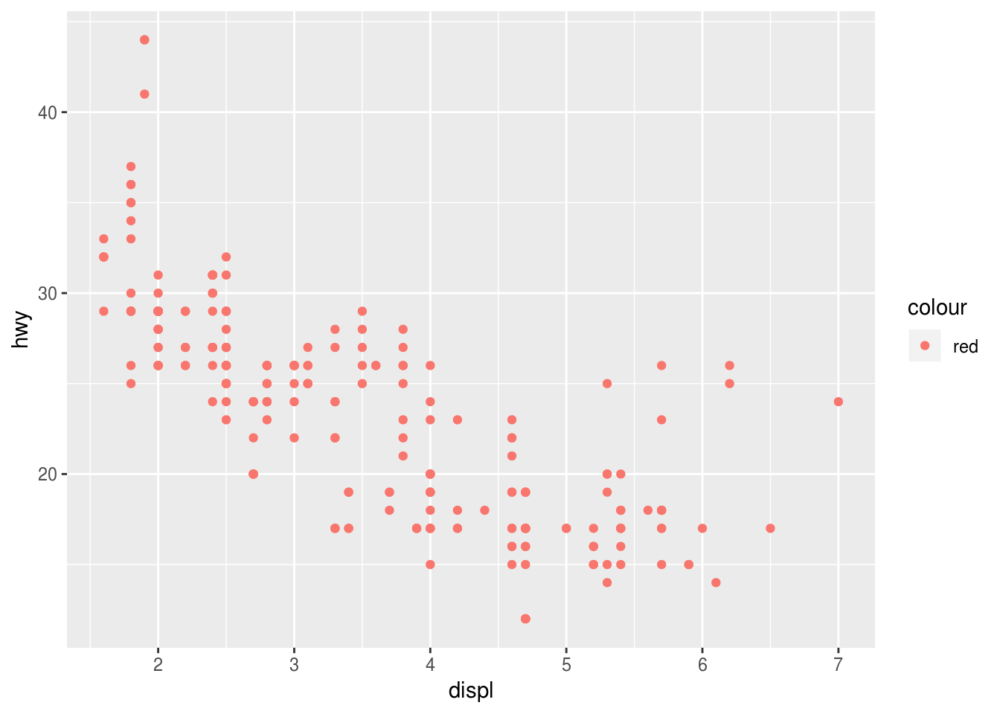
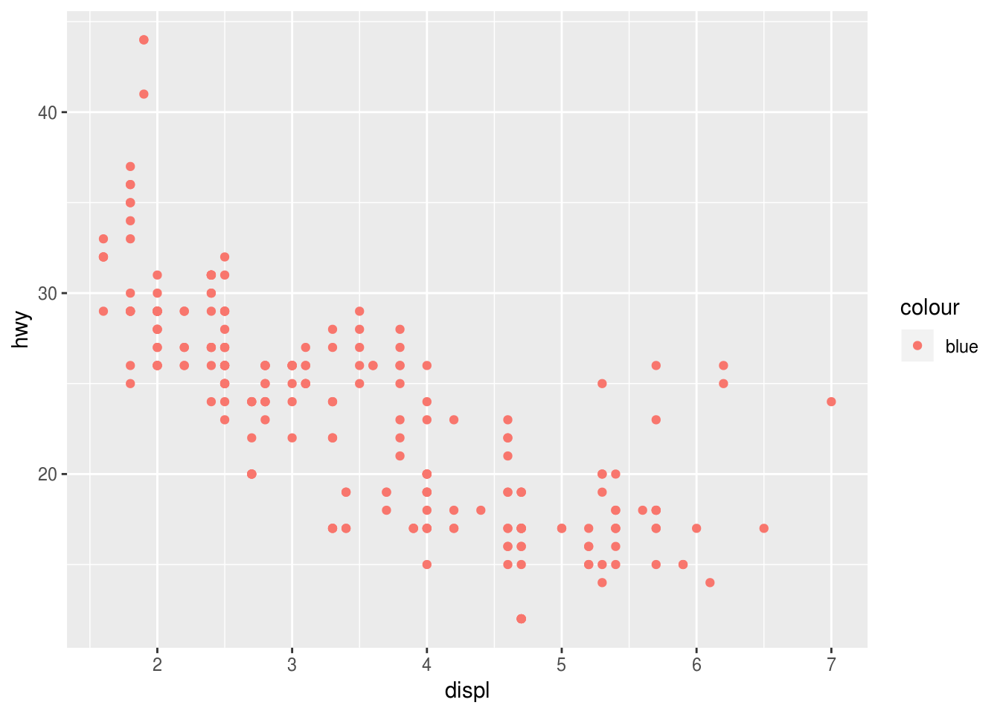
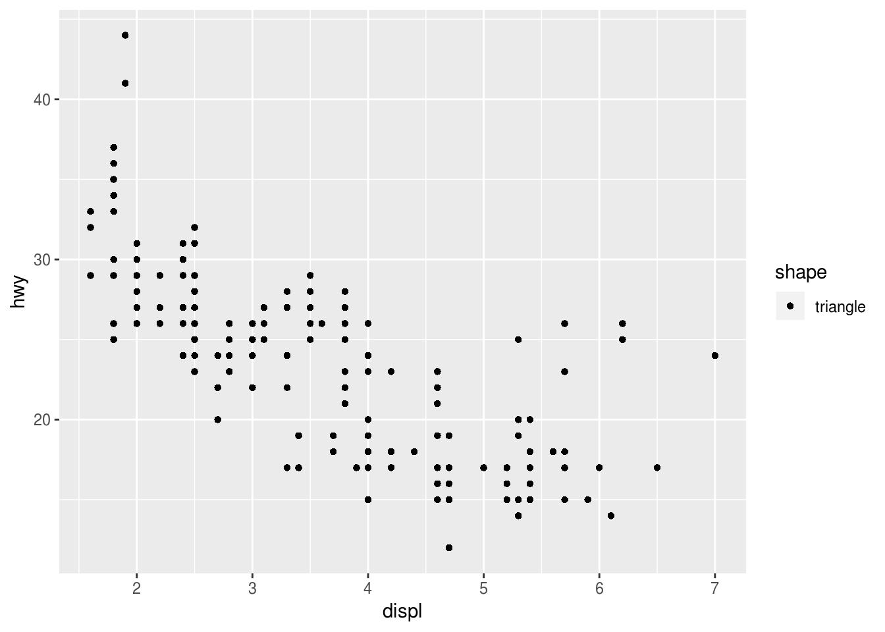

Manual aesthetics
Kirill Müller
June 1, 2017
Blue transparent points
ggplot(data = mpg) +
geom_point(
mapping = aes(x = displ, y = hwy),
alpha = 1 / 3,
color = "blue"
)
Some appear darker due to overplotting.
Assigning variable outside aes()
Fails with an error:
ggplot(data = mpg) +
geom_point(
mapping = aes(x = displ, y = hwy),
color = year
)## Error in layer(data = data, mapping = mapping, stat = stat, geom = GeomPoint, : object 'year' not foundThe error message is fairly confusing in some cases:
ggplot(data = mpg) +
geom_point(
mapping = aes(x = displ, y = hwy),
color = class
)## Error in rep(value[[k]], length.out = n): attempt to replicate an object of type 'builtin'
Assigning constant inside aes()
This works, but creates a useless legend and may give unexpected results:
ggplot(data = mpg) +
geom_point(
mapping = aes(x = displ, y = hwy, color = "red")
)
ggplot(data = mpg) +
geom_point(
mapping = aes(x = displ, y = hwy, color = "blue")
)
ggplot(data = mpg) +
geom_point(
mapping = aes(x = displ, y = hwy, shape = "triangle")
)
Valid values for manual aesthetics
“color”: basic colors, numbers
“alpha”: numbers between 0 and 1
“shape”: integers from 0 to 25, negative integers seem to display a letter
“size”: positive numbers
Copyright © 2018 Kirill Müller. Licensed under CC BY-NC 4.0.